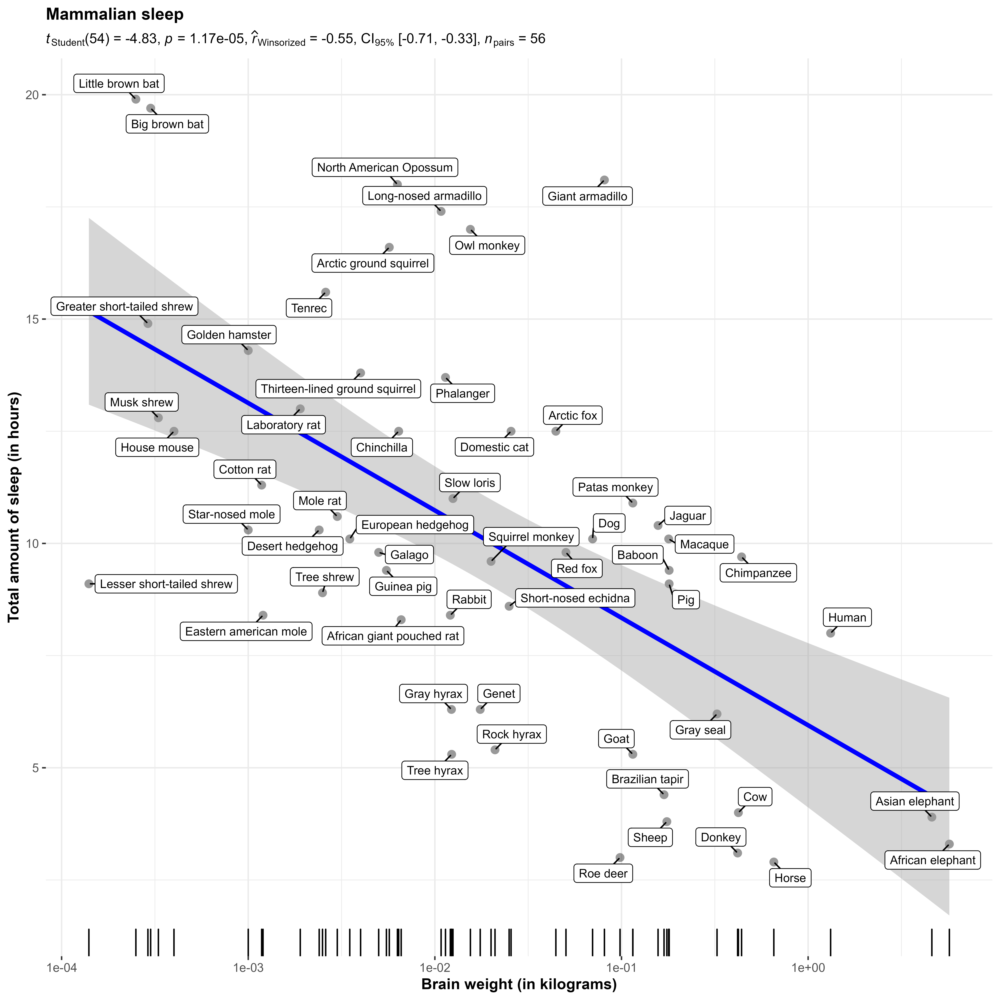
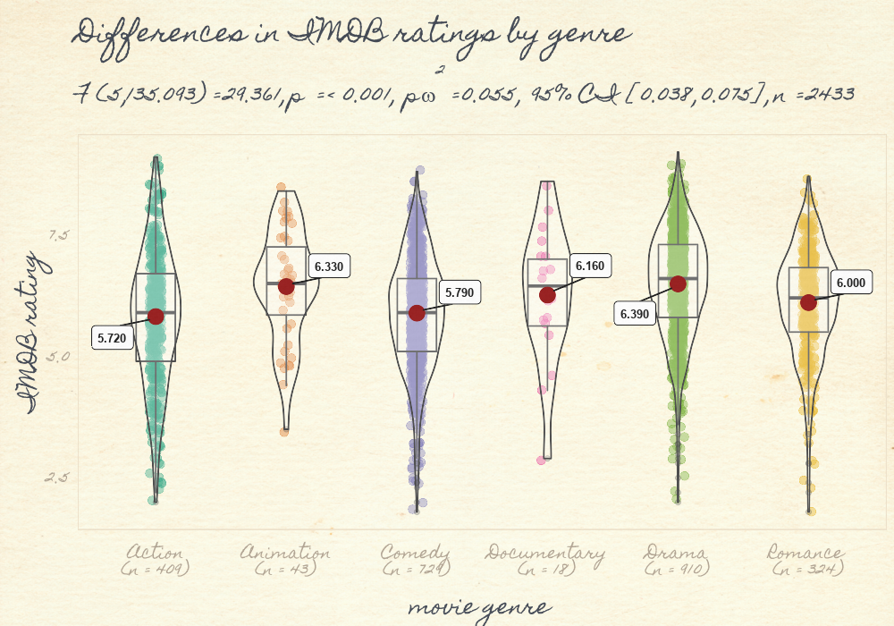

vignettes/web_only/gallery.Rmd
gallery.RmdHere are few examples that demonstrate how the basic plots generated by ggstatsplot can be further modified with either with ggplot2 functions or other additional geoms, themes, etc. from ggplot2 extensions. This is because the class of the object from all functions is still ggplot.
ggscatterstats
# for reproducibility
set.seed(123)
# plot
ggstatsplot::ggscatterstats(
data = ggplot2::msleep,
x = brainwt,
y = sleep_total,
xlab = "Brain weight (in kilograms)",
ylab = "Total amount of sleep (in hours)",
label.var = "name",
title = "Mammalian sleep",
marginal = FALSE,
type = "robust"
) + # further modifications with `ggplot2`
ggplot2::geom_rug(sides = "b") +
ggplot2::scale_x_log10()
#> Note: 95% CI for effect size estimate was computed with 100 bootstrap samples.
ggbetweenstats
# for reproducibility
set.seed(123)
# needed library (download from GitHub)
# devtools::install_github("gadenbuie/ggpomological")
library(ggpomological)
# plot
ggpomological::paint_pomological(
pomo_gg = ggstatsplot::ggbetweenstats(
data = dplyr::filter(.data = ggstatsplot::movies_long,
genre %in% c("Action", "Action Comedy", "Action Drama", "Comedy")),
x = genre,
y = rating,
messages = FALSE,
xlab = "movie genre",
ylab = "IMDB rating",
title = "Differences in IMDB ratings by genre"
) + # further modifications with `ggplot2`
ggpomological::theme_pomological_fancy() +
ggplot2::theme(legend.position = "none"),
res = 110,
width = 1000,
height = 700
)
If you find any bugs or have any suggestions/remarks, please file an issue on GitHub: https://github.com/IndrajeetPatil/ggstatsplot/issues
For details, see- https://indrajeetpatil.github.io/ggstatsplot/articles/web_only/session_info.html